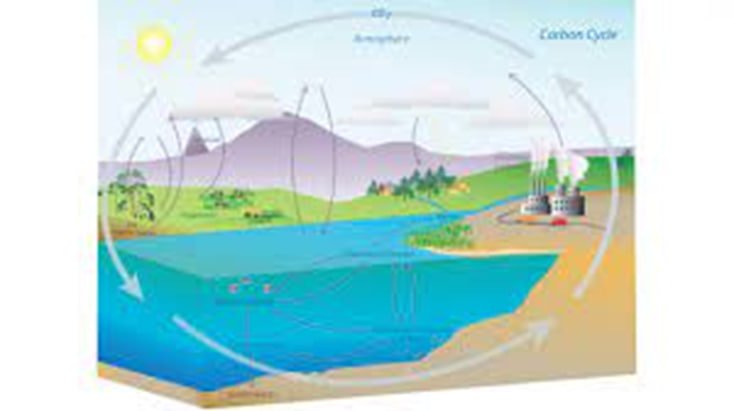
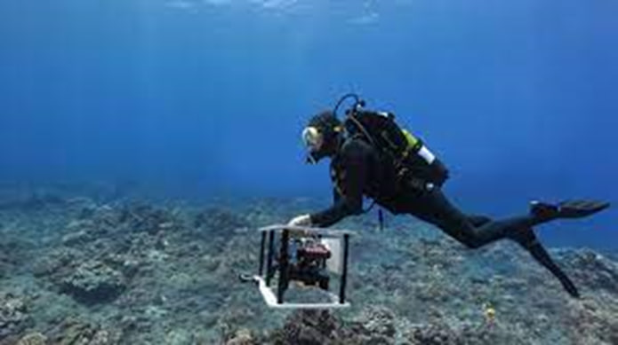
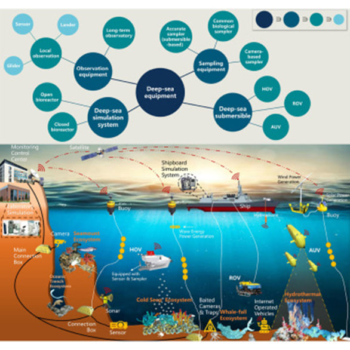

Climate Research
Research related to the ocean encompasses a diverse range of fields, each playing a vital role in unraveling the complexities of our planet's climate, biodiversity, and carbon cycle. Climate research delves into the ocean's significant influence on global climate patterns. Oceans serve as colossal heat reservoirs, impacting weather systems and climate fluctuations. Scientists explore ocean currents, temperature gradients, and heat exchange mechanisms to decipher climate phenomena such as El Niño and La Niña, advancing our understanding of climate change dynamics.
Biodiversity Studies
In tandem, oceans harbor an extraordinary wealth of life, contributing immensely to Earth's biodiversity. Marine biologists explore ocean depths, unveiling new species, studying ecosystems, and assessing the health of marine life. This research informs conservation strategies and deepens our comprehension of the intricate marine ecosystems vital to sustaining biodiversity.
Carbon Cycling
Moreover, oceans are central to the planet's carbon cycle, absorbing and storing substantial amounts of carbon dioxide (CO2). Investigating this process is crucial for evaluating the impact of rising CO2 levels on climate change mitigation. These interconnected research domains spotlight the ocean's pivotal role in shaping our climate, preserving biodiversity, and regulating the Earth's carbon balance.
Natural Resource Management
Ocean-related research encompasses a broad spectrum of disciplines, each contributing to our understanding of natural resources, oceanography, and weather forecasting. Natural resource studies delve into the oceans as vital sources of fisheries, minerals, and renewable energy. Scientists investigate sustainable resource management to ensure the responsible utilization of these valuable assets.
Oceanography
Oceanography, on the other hand, covers a vast range of research areas, from physical oceanography, studying currents and circulation patterns, to chemical oceanography, examining water composition, and biological oceanography, investigating marine life. These investigations deepen our understanding of ocean processes, driving advancements in technology and the development of innovative research tools.
Weather Forecasting
Furthermore, oceans play a pivotal role in weather forecasting. Scientists rely on ocean data, including sea surface temperatures and current patterns, to enhance predictions of weather events, storms, and hurricanes. This information is crucial for disaster preparedness and minimizing the impact of extreme weather on coastal communities. In essence, ocean research contributes to the sustainable management of natural resources, expands our knowledge of oceanographic processes, and bolsters the accuracy of weather forecasts, benefiting society as a whole. Ocean-related research encompasses a wide array of disciplines, each with its unique contributions to environmental monitoring, technological advancements, deep-sea exploration, and disaster prediction and mitigation.
Environmental Monitoring
Environmental monitoring in the ocean involves tracking and assessing the impact of human activities and natural processes on marine ecosystems. Scientists gather data on pollution, ocean acidification, and habitat degradation to inform conservation efforts and safeguard the health of our oceans.
Technological Advancements
Technological advancements driven by ocean exploration have yielded innovative tools and techniques. Remotely operated vehicles (ROVs), autonomous underwater vehicles (AUVs), and advanced sensors enable scientists to explore the ocean's depths, revealing new species and extreme environments. These technologies have applications beyond ocean research, including space exploration and medical fields.
Deep-Sea Exploration
Deep-sea exploration unveils the mysteries of the ocean's abyss. Scientists probe extreme environments, uncovering unique ecosystems and discovering new species that provide insights into life's adaptability. Such research contributes to our understanding of Earth's history and the potential for life beyond our planet.
Disaster Prediction and Mitigation
Disaster prediction and mitigation benefit greatly from ocean studies. Understanding ocean dynamics, including temperature patterns and currents, is crucial for predicting and preparing for natural disasters like tsunamis and storm surges. Early warning systems utilize ocean data to safeguard coastal communities and reduce disaster-related risks.
Conclusion
Ocean research spans environmental monitoring, technological advancement, deep-sea exploration, and disaster mitigation. It tracks human and natural impacts on marine ecosystems, informs conservation, and drives innovation in ROVs, AUVs, and sensors, benefiting diverse fields. Deep-sea exploration uncovers unique ecosystems, offering insights into adaptability and Earth's history, even holding implications for extraterrestrial life. Understanding ocean dynamics aids disaster prediction and preparedness, enhancing coastal safety. Ocean research's multifaceted contributions are crucial for scientific progress and environmental preservation.